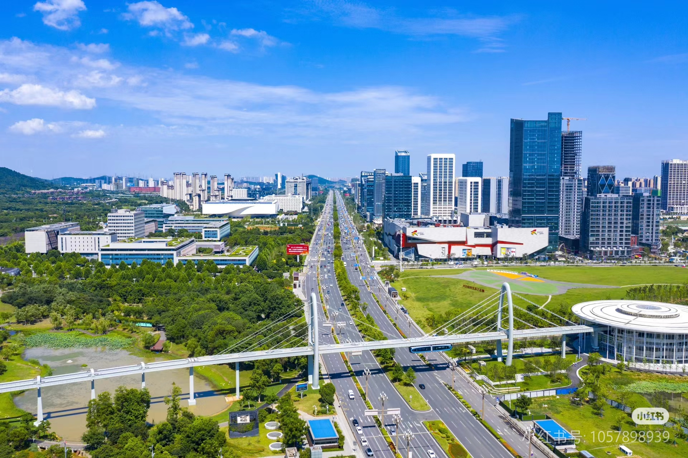

| 光马，跑在“高”“新”大道上! |
| 2024年11月16日 |
明早8点，2024光谷马拉松即将鸣枪开跑。2万名来自全球各地的跑者，36个来自光谷高科技企业、科研院所、人才团队、青年团体的接力方阵，将从华中科技大学出发，沿着36年来光谷建设者们走过的道路，满怀自信、一路向东，跑入武汉新城，奔向世界光谷。
|  |
42.195公里的光马赛道，40%都在高新大道上。这正是全体光谷人长期接续奋进、攀“高”向“新”的生动写照。
高新大道两侧，高校院所、研发机构、科技园区、龙头企业云集，医院、学校、空轨、公园、绿地、科技馆、书房等城市新兴基础设施如雨后春笋。每一天，都有高标准、高技术、新理念、新成果在这里酝酿，从这里诞生。
2万余人在“一城两廊三区万企”最强赛道上奔跑，是来自五湖四海的客人对中国光谷36年建设成果的集中巡礼，也是一次光谷人的大聚会。平时散布在各自岗位的科技工作者、投资人、创新创业者、青年人等，拥有了难得的交流机会，将进一步凝聚发展共识，碰撞创新火花，并作为建设者、主人翁，向世人展示光谷人蓬勃向上的精神面貌。他们的骄傲和自信，就写在脸上。
马拉松的精神核心，是挑战自我、超越极限、坚忍不拔和永不放弃。光谷的发展，就是一场马拉松。
36年久久为功，一代代不同领域的光谷人，坚定不移做好科技创新、产业发展、产城融合三件事，拉出我国第一根实用化光纤，研发了3DNAND闪存芯片等一大批全球第一、中国首创成果，发展出了“独树一帜”的光电子信息产业，建设了闻名世界的“中国光谷”，共同煅造出“敢于冒险、崇尚成功、鼓励创新、宽容失败”的光谷精神。
党的十八大以来，习近平总书记四赴光谷。11月5日，在武汉产业创新发展研究院考察时，他强调，广大科技工作者和企业家要增强自信、志存高远、协同发力，在提升创新体系整体效能、建设现代化产业体系中不断建功立业。这是对科技工作者和企业家的要求，也是对全体光谷人的鼓励和鞭策。
从“一束光”到“一座城”，光谷人从来敢于做梦、善于圆梦。在起步阶段底子薄、基础弱的情况下，就敢仰望星空，提出“美国有硅谷、中国有光谷”的目标。如今的光谷，已经积累了厚实基础，创新实力稳居全国高新区前列，我们有更大信心、更高目标：一定能够引领科技变革、一定能够培育世界一流企业、一定能够建成世界光谷，向更高、更快、更强的目标迈进。